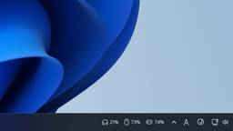
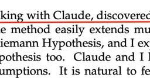

直近1週間の人気フィード
はてなブックマーク数を元に新着優先で並べ替え

1万円のシンセをAIで魔改造。電子楽器のファームウェア開放が始まった 149
149 ギズモード・ジャパン
ギズモード・ジャパン
中国のM-VAVEという楽器メーカーが販売している小型FMシンセ「FM-1」が、ちょっとした話題になっています。きっかけはユーザーによるカスタムファームウェアの開発です。この秋からソフトウェア改造が流行FM-1はアリエクなどを覗くと、だいた…
19時間前

マウスやキーボードの電池残量がタスクバーで確認できる「BatteryHub」 176 PC Watch
PC Watch
krisgfx9氏は、ワイヤレス機器のバッテリ残量をタスクバーに表示するオープンソースツール「BatteryHub」を公開している。無料で利用でき、対応OSはWindows 10/11。Linux向けの実験的なビルドも用意されている。
1日前

NANDフラッシュ、ついに値下がりへ。2027年第1四半期に最大-5%の予測 103
PC Watch
ついにNANDフラッシュの価格が下落に転じる見込みとなった。調査会社TrendForceは11月19日(台湾時間)、世界のNANDフラッシュ市場で2027年に需給バランスが逆転し、第1四半期で最大5%、第2四半期で5%ほど価格が下落するとの見通しを示した。
1日前


Windows 11のロック画面をナレーターで突破できる脆弱性。BitLocker環境も対象 26 PC Watch
BitLockerで保護し、画面をロックしておけば安心、とはいかなさそうだ。セキュリティ研究者のNightmare Eclipse氏は11月19日(現地時間)、Windows 11のロック画面をナレーター経由で突破できるとするゼロデイ脆弱性「FastUnlock」をGitHubで公開した。現時点ではMicrosoftによる修正パッチは提供されていない。
1日前

JEDEC、次世代メモリ「DDR6」プレビュー公開。モジュールは74mmに小型化 18 PC Watch
半導体標準化団体のJEDEC Solid State Technology Associationは18日(米国時間)、次世代DRAM標準「DDR6」のプレビューを発表した。なお、DDR6は現在開発中のため、今回示された機能は計画を反映したもので、開発および承認過程において変更される可能性があるとしている。
1日前

Anthropicの人がClaudeと数学界のラスボス「リーマン予想」の証明を発見したらしい 9 ギズモード・ジャパン
Anthropic所属の数学者Levent Alpöge氏が自身のサイトにremark.pdfというファイルをアップしています。この文書には次のようなことが書かれています。リーマン予想は、数論を代表する古典的な問題です。ある大きさまでに素数…
14時間前

ロボット犬はもう、データセンターの警備を始めている。1台2800万円でも「2年で投資回収できる」 3 ギズモード・ジャパン
AIデータセンターの警備で活躍するロボット犬の導入と経済合理性。1台2800万円でも2年で投資回収できる見込み。
3時間前